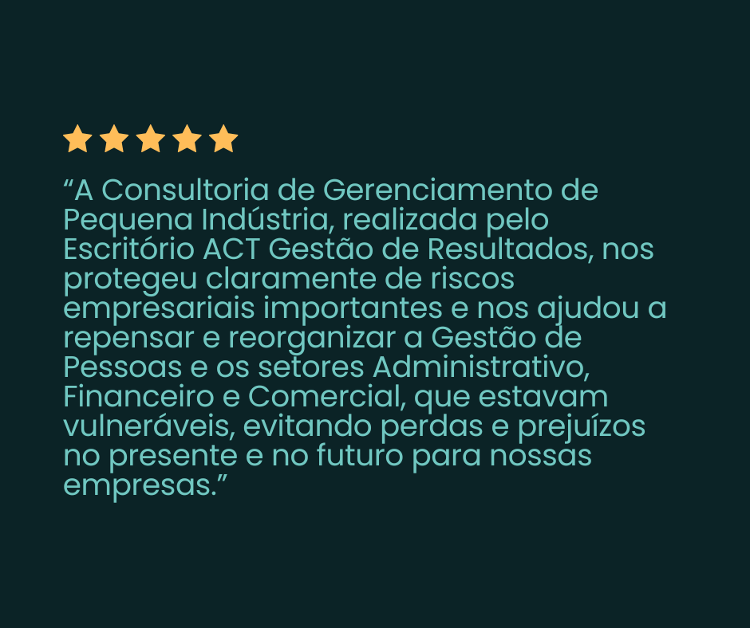
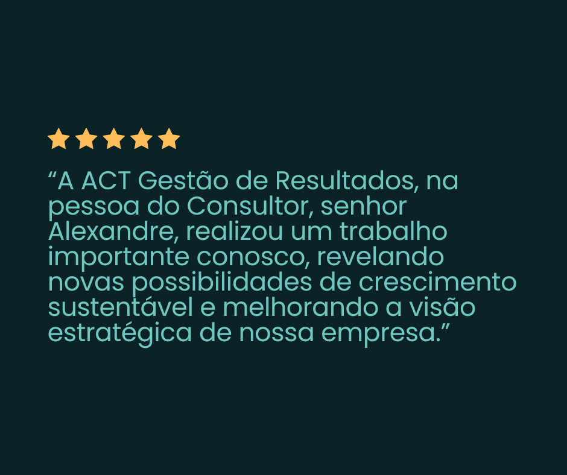
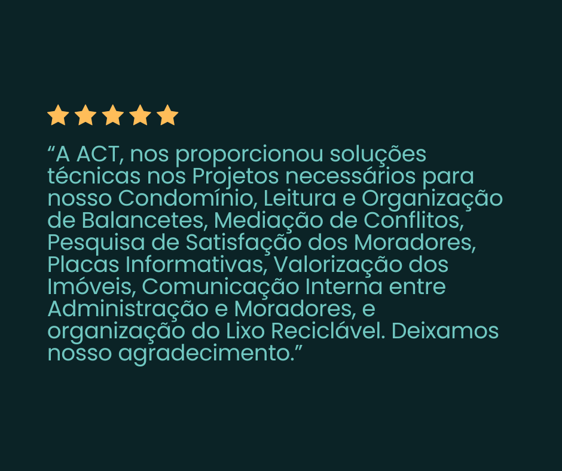
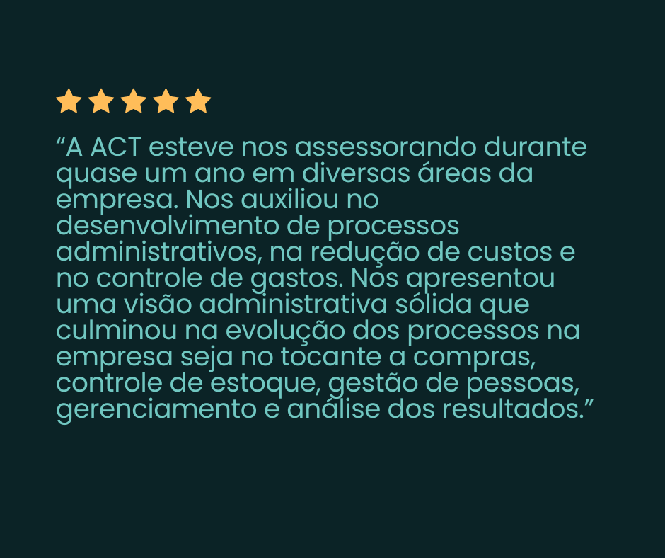

Sobre nós
A ACT é uma consultoria fundada em 2009 e especializada em Organização, Desenvolvimento e Expansão empresarial. Atuamos de forma estratégica, técnica e humana — conduzindo empresas, líderes e comunidades em processos de transformação madura, artesanal, tecnológica, silenciosa e profundamente efetiva. E, afetiva! Nosso trabalho integra gestão, inovação, cultura e educação voltados ao futuro. Acreditamos na força das organizações, sejam empresariais ou sociais, como instrumentos capazes de promover bem-estar, dignidade, pertencimento e resultados sustentáveis. Trabalhamos com empresas de diferentes portes e segmentos, conduzindo projetos que vão desde a estruturação de um novo negócio até processos complexos de expansão, sucessão e valuation. Ao longo dessa jornada, construímos uma abordagem única: análises precisas, visão sistêmica e respeito absoluto ao capital humano.
A ACT atua sempre com três pilares centrais, formando quatro ações de resultados:
ORGANIZAR
Entender onde a empresa está, com clareza técnica e humana.
Entender onde a empresa está e onde quer chegar; com clareza técnica e humana.
DESENVOLVER
Fortalecer pessoas, processos, cultura e tecnologias.
EXPANDIR
Consolidar modelos de crescimento seguros, lucrativos e alinhados ao propósito dos fundadores.
Nosso compromisso é apoiar organizações em sua evolução com consciência, estratégia e profundidade, preservando
suas essências, valores e histórias.
Essa base técnica se soma a princípios que trazem uma perspectiva real e futurista, que compreende as
organizações como espaços de convivência, criação e impacto positivo no bem-estar coletivo, e integram
quatro pilares essenciais da liderança empresarial:
(1) ampliar receitas com inteligência estratégica,
(2) reduzir despesas sem comprometer a qualidade,
(3) direcionar investimentos de forma consciente e sustentável, e
(4) proteger o patrimônio construído com mérito e visão de longo prazo.
Serviços


Resultados






Expertises do Escritório ACT
Com quase vinte anos de atuação no mercado e mais de três dezenas de segmentos diferentes atendidos e validados — desde a estruturação de um plano de negócios para uma barraca de cachorro-quente, passando pela organização e expansão de uma rede varejista para atingir 100 lojas, ou pelo valuation de uma indústria de grande porte, até a gestão ágil de startups inovadoras — a ACT construiu uma metodologia sólida, flexível e profundamente conectada à realidade de cada organização.
Ao longo dessa trajetória, aprendemos que resultados consistentes nascem quando líderes e organizações conseguem lapidar com clareza o que realmente querem e entendem as dores da necessidade de mudanças internas e externas. É nesse ponto que a ACT atua como uma força estratégica de alto valor: traduzindo expectativas em decisões, propósito em método e visão em ação concreta.
Desde o início — e ao longo de todo o processo — utilizamos técnicas de diagnóstico, organização e desenvolvimento para apurar, ajustar, corrigir, extrair ou inserir aquilo que é essencial em cada projeto. Muitas vezes, colocando literalmente a mão na massa, treinando equipes, formando lideranças e reorganizando estruturas para que a estratégia se manifeste no cotidiano real da empresa ou instituição.
Independentemente do porte, do setor ou do propósito, a ACT e seus parceiros atuam para cumprir a missão proposta, gerar resultados mensuráveis e deixar um legado organizacional mais maduro, consciente e preparado para o futuro. Atitude - Comprometimento e Técnica voltada a resultados, é que entregamos para você e sua empresa!